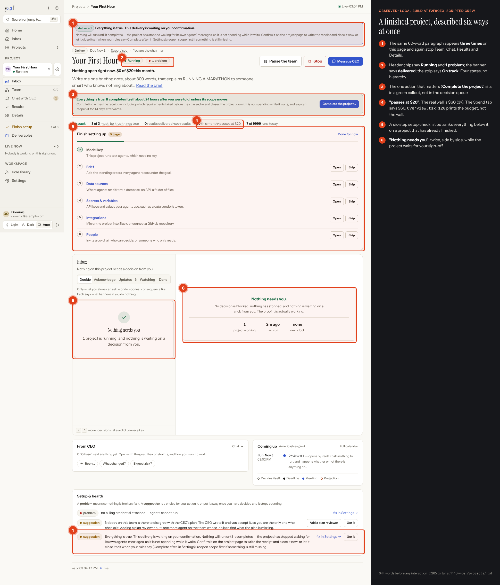
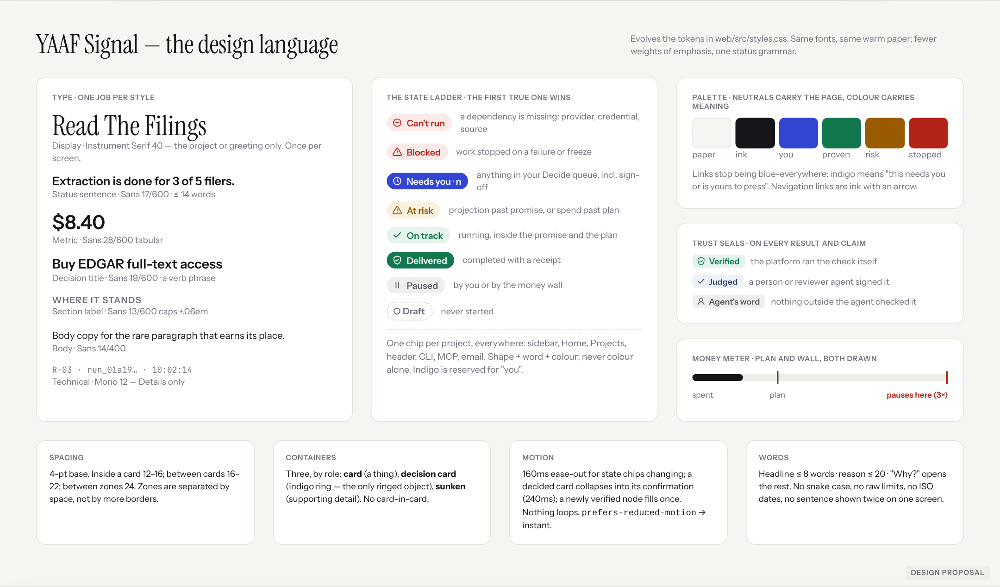
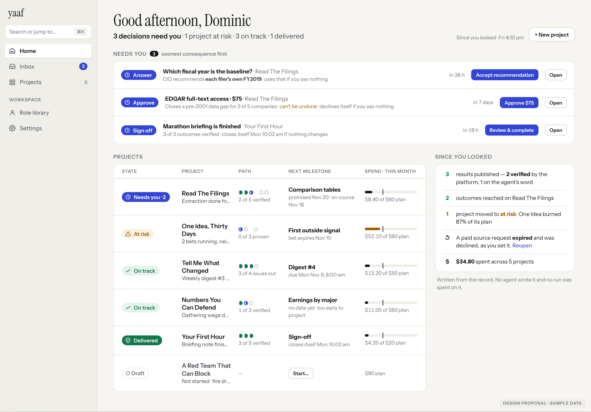
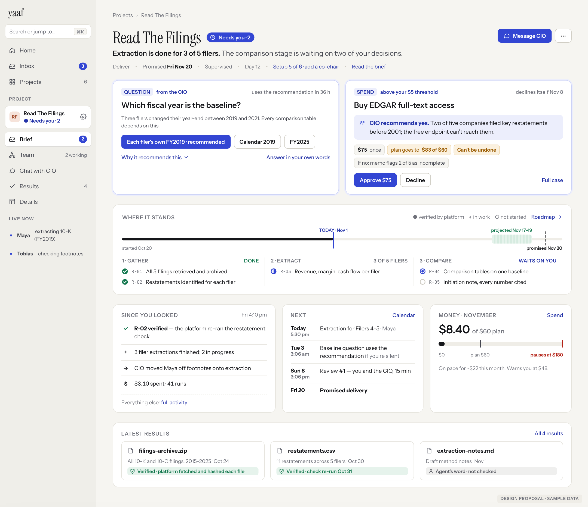
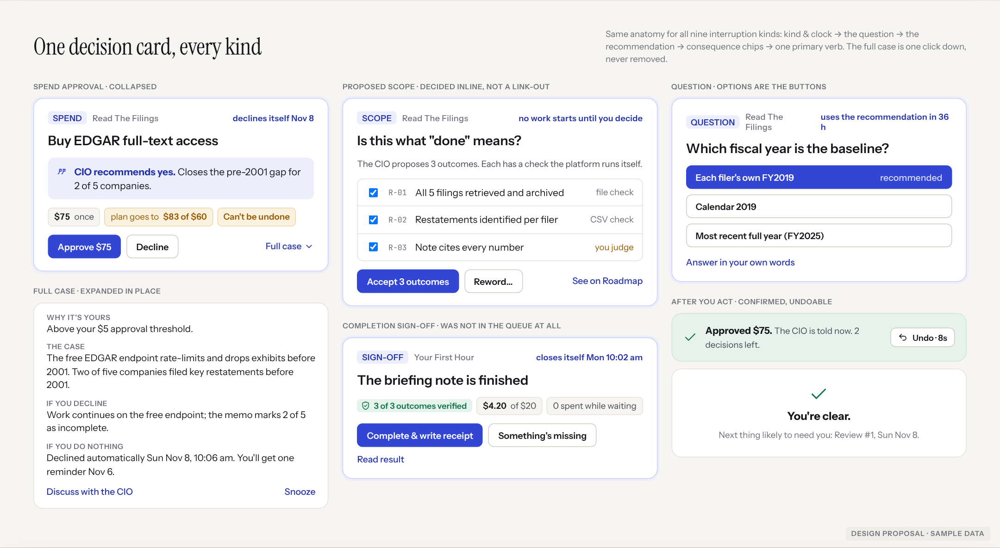
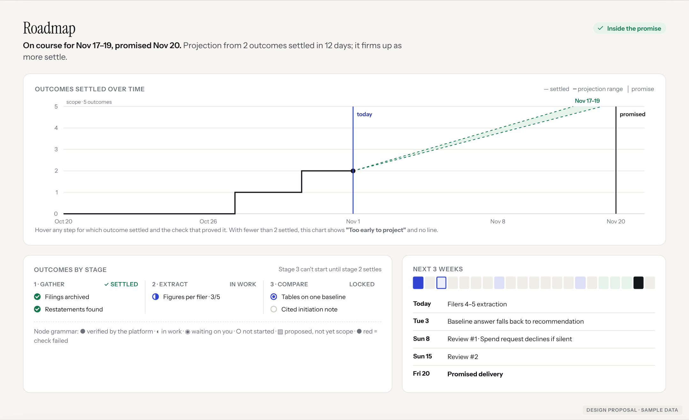
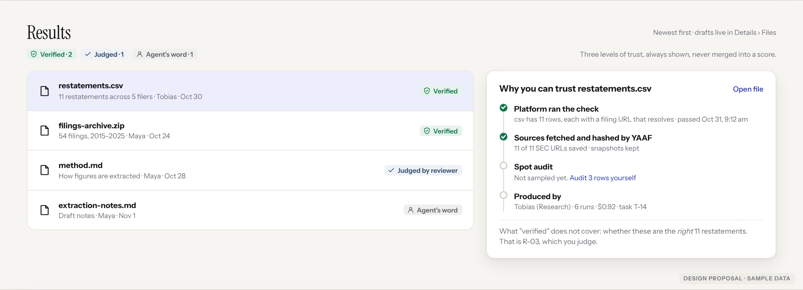
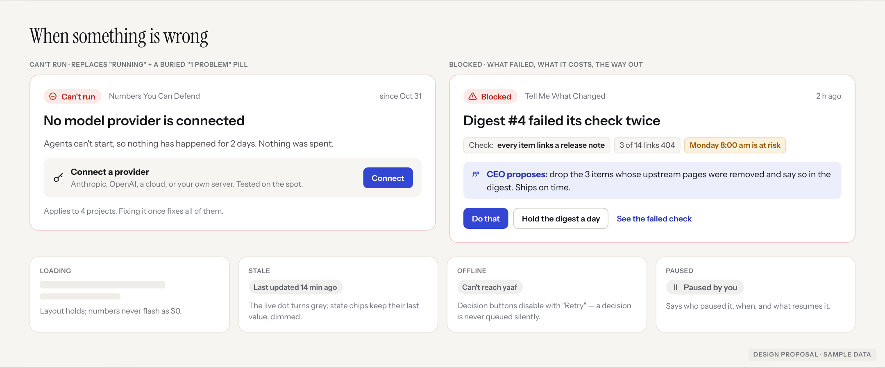
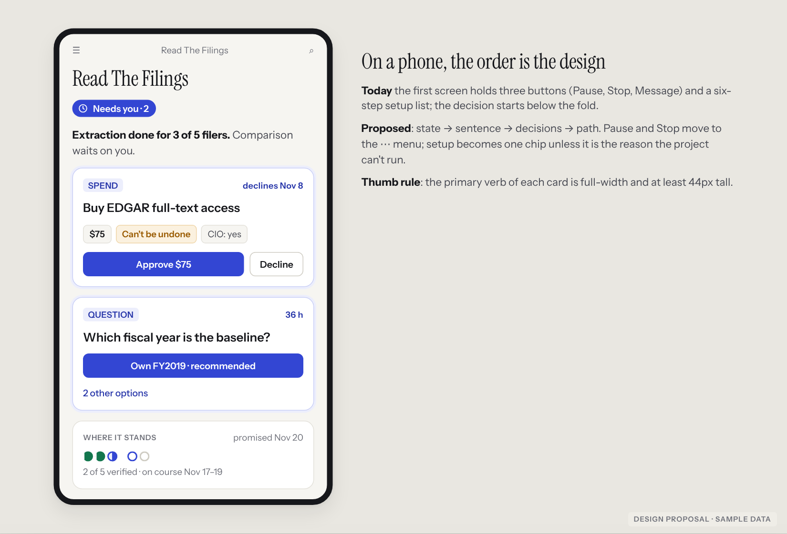
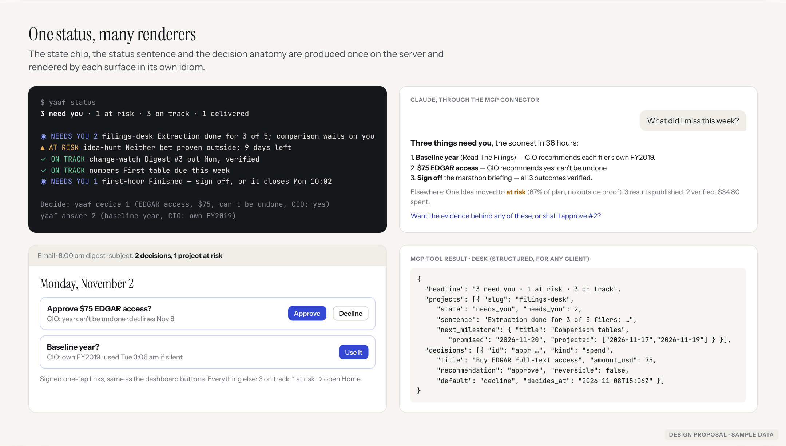

YAAF already knows almost everything a chairman needs to know. The interface makes you assemble it. This is a design blueprint for showing it: one state per project, one decision card, a visible path to the promise, and a seal on every result. It keeps every capability the product has.
yaaf status: one sentence for the portfolio, then one line per project VerifiedA server-derived state ladder (Can't run → Blocked → Needs you → At risk → On track → Delivered) and one status sentence. Home, the sidebar, the header, the CLI, MCP and email all render the same chip. This retires most banners.
Needs you → Where it stands → What changed / what's next → What it produced. Decisions are inline. The path to the promise is drawn. Setup becomes a chip.
Three seals (Verified · Judged · Agent's word) on every result and claim. A money meter that draws the plan and the 3× wall. A projection drawn as a range only when there is data for one.
Not the depth, and not the navigation. It is contradiction and repetition: the product often holds the right fact, then shows it in several competing forms. Award-level products have one way to say each thing. The fix is mostly subtraction plus one shared state model. It is not a new visual coat.
Know in five seconds. Decide in thirty. Verify in one click.
Money is always one glance away, as a meter beside these zones. Machinery (runs, messages, rules) is one click down, in Details, unchanged.
Like a board member reading a well-run company's one-page update: calm when it's calm, alerted when something needs them, and never wondering whether a green dot is telling the truth. They lead an organisation. They don't debug one.
Real screenshots from YAAF at f2f9ce3, run locally on SQLite. The projects were built from the repo's own examples/ and driven by the fire-drill's scripted crew, at $0. Numbered marks are findings. Click any image to open it full size.

| Screen | Words on load | Height @1440 | Notes |
|---|---|---|---|
| Project landing (finished project) | 644 | 2,265 px | The decision isn't in the queue. "Nothing needs you" appears twice. |
| Project landing (with 1 decision) | 385 | 1,937 px | The decision starts at ~860 px, under setup |
| Home (6 projects) | 633 | 1,714 px | Every card has the same weight |
| Roadmap | 400 | 1,410 px | 8 tiles, 5 of them empty or zero |
| Role library | 1,429 | 3,627 px | Reference material shown as the default |
| Start a project | 305 | 900 px | The two paths are explained in paragraphs |
className="help" blocks in web/src | 474 | — | Each is a paragraph explaining a screen Code |
| Area | What fails | Evidence | Preserve |
|---|---|---|---|
| Money truth | The project header says "pauses at $20" while the wall is $60. web/src/pages/project/Overview.tsx:120 prints cap, not wall, against the explicit rule in ui.tsx:307. At 100% it would also claim "the project is paused", which is false. | Verified Code | The Spend page's meter and wording |
| Status | Five status signals on one header with no precedence. Home cards say "Running" on projects whose health says "agents cannot run". | Verified | The status sentence ("1 decision waiting on you. $0 of $60 this month.") is right; make it the one line |
| Needs you | Completion sign-off is not in Decide. Web shows "Nothing needs you". yaaf status says "Nothing open right now". The briefing says "Waiting on you: nothing". Meanwhile it closes itself in 24 h. | Verified web+CLI | The Decide/Acknowledge/Updates/Watching split |
| Counts | For the same project, yaaf status says "2 decisions waiting" and yaaf briefing says "Waiting on you: 1 · 1 approval(s)". The briefing doesn't count asks. | Verified CLI | The shared producer idea; finish it |
| Time claims | "spent runs and closed no work in 14 days" on a project created 5 minutes earlier, on Home and in the briefing. | Verified | The drought rule; fix its sentence |
| Roadmap | "Stage 1 · open" above "Proven true". "Work here is refused until stage 1 settles" under settled stages. Nov 1 printed 3×. | Verified | Stages, requirement rows, reopen |
| Results | The project reads "delivered · Everything is true" while Results says "Nothing published yet". A user cannot tell what was produced. The scripted crew publishes nothing, but the screen doesn't reconcile the two either. | Verified partly harness | "who made it, who checked it" |
| Scope decision | The card says "Review on the Roadmap →". It is the only decision kind you can't take in place. | Verified | "If you do nothing" line |
| Approvals | No recommendation field (ApprovalRequest, yaaf/server/api/agent.py:2331). "$75" appears 3× on the card; the budget remaining is never shown. | Code Verified | The whole card anatomy |
| Activity | 8 pills over 7 tabs; Runs, Proof and Messages appear twice. Default rows read like logs. | Verified | "On whose authority" on every row |
| Projects page | Card links say "Overview →" (the page is now "Inbox"). Slugs are in mono. "— CEO judgment" with no value. 4 text links per card. | Verified | Sort by "Needs you first"; Cards/Compact |
| Mobile | The first screen holds Pause, Stop and Message, then setup. The decision is below the first screen. | Verified 390×844 | Drawer navigation |
| Typography | Instrument Serif is used for page titles, section titles, empty states and stage labels. Display type everywhere means no display moment anywhere. Body copy is 12–13 px in many supporting blocks. | Verified styles.css | The font pairing itself; it's distinctive |
An evolution of web/src/styles.css, not a rebrand. The same Instrument pairing and the same warm paper, with stricter rules about what each element is allowed to mean.

Serif display once per screen: the project name or the greeting. The status sentence is 17/600 sans; it is the most important line and should look it. Metrics are tabular. Mono only in Details. Minimum body size 14 px; 12.5 px only for metadata.
Indigo is the "you" colour: Needs-you chips, decision rings and primary verbs. Today blue is every link, so it means nothing. Green = proven, amber = risk, red = stopped. Each always ships with a shape and a word. The existing contrast-checked status tokens are kept.
Card = a thing. Ringed card = a decision; it's the only ringed object, so decisions are found by shape before reading. Sunken = supporting detail. Zones are separated by 24 px of space, not by more borders.
Path track: are we inside the promise? Burn-up: is the pace real? Meter: how close is the wall? Mini-path dots: how far along, in outcomes, not tasks. No chart appears below its data threshold. Instead it says "Too early to project".
A chip changing state cross-fades (160 ms). A decided card collapses into its confirmation with an 8 s Undo (240 ms). A newly verified node fills once. Nothing loops or pulses except "Live now". With prefers-reduced-motion, every transition is instant.
Status never relies on colour alone: shape + word + colour. Every chart has a text equivalent (the status sentence is that equivalent). Decision verbs are ≥ 44 px on touch. j/k and ⌘K are kept. Charts carry aria-label summaries.
| State | True when | Replaces today |
|---|---|---|
| ⊖ Can't run | A dependency is missing: provider, billing credential, required data source | "Running" + red "1 problem" pill + health row |
| ▲ Blocked | Work stopped on a failed check, a frozen thread, or the money wall | Scattered flags and heads-ups |
| ◉ Needs you · n | Anything in Decide, including completion sign-off and proposed scope | "Waiting on you" sentence, banners, the green callout |
| ▲ At risk | Projection range crosses the promise, spend is past plan, or a bet is near expiry without proof | "Watching" rows and suggestions |
| ✓ On track | Running, inside promise and plan | "Running" + "On track" strip |
| ◆ Delivered | Completed with a receipt | The "delivered" banner (which today shows before completion) |
Plus Paused and Draft. The state and its sentence are computed once on the server, next to the existing desk producer, so web, CLI, MCP, email and Slack can never disagree. Today they do: see §C, Counts.
Built as HTML and rendered, in the proposed tokens. Content is sample data written in the shape of the real payloads (requirements, asks, approvals, agenda, ledger). Every number on them could be produced by an existing endpoint. Where one couldn't, it is called out.

/plan)/agenda)briefing_seen)
The page called "Inbox" holds far more than an inbox, and shares its name with the global Inbox. Proposed name: Brief. This is the only navigation change in the proposal, and it's optional (P2). Keyboard shortcut and route are unchanged.

Kind + clock (the clock only when one exists) → the question as a verb phrase → the recommendation (required for every kind; approvals gain the field asks already have) → consequence chips: amount, effect on plan, reversibility, the default if silent → one primary verb naming the amount ("Approve $75") → "Full case" expands in place. It never navigates away. After acting: a confirmation with an 8-second Undo where the action allows it, and "You're clear" with the next likely interruption. Nothing is hidden. Irreversibility and over-plan spend are amber chips, never footnotes.

Eight tiles become one burn-up and one sentence. The projection is a range drawn from settled outcomes (plan.burnup). Below 2 settled it is not drawn at all. The stage list keeps every verb (accept, cut, verdict, reopen, restage, reword).

Each result carries one of three seals, from data that exists (record?view=results, evidence provenance, audit samples). The drawer says what "verified" doesn't cover. That's the most important trust sentence in the product.

Every failure card answers: what failed · what it costs · what the CEO proposes · your alternatives. Loading, stale, offline and paused each get a designed state. A decision is never queued silently while offline.

The same four-question order. Full-width primary verbs. Path as a dot row with a single line beneath.

The CLI keeps its sentence-first style and gains the state glyph and a numbered decide shortcut. MCP's desk returns state, sentence, next_milestone and a decision object with recommendation, reversible and default, so Claude can answer "what did I miss?" in four lines. Email carries signed one-tap verbs, which fixes the "Decide it on the Decisions screen" dead end the 23 Oct audit found re-check.
The left column is verbatim from the running product unless marked. The right column is the proposal.
Ranked by expected user impact. V = visual/copy change · W = interaction or workflow change · S = needs a server change. Effort: S < 3 days, M < 2 weeks, L > 2 weeks.
| # | Change | Problem → evidence | Benefit | Type | Effort | Risk / trade-off | Pri |
|---|---|---|---|---|---|---|---|
| 1 | Fix "pauses at" to the wall; fix "the cap is reached — paused" | Wrong money statement · Overview.tsx:120 | The one class of fact that must never be wrong | V | S | None | P0 |
| 2 | Completion sign-off and proposed scope enter Decide everywhere: badge, Home, CLI, briefing, MCP | "Nothing needs you" while sign-off waits · verified web + CLI | Needs-you becomes trustworthy | S W | M | Badge counts rise; that's correct | P0 |
| 3 | Server-derived state + sentence (the ladder) on dashboard, desk, briefing, CLI | 5 conflicting signals; CLI/briefing counts disagree | Five-second comprehension; one vocabulary | S V | M | Ladder edge cases need tests (add to selftest_invariants) | P0 |
| 4 | Delete repeats: one banner max, never the same sentence twice; drop the cross-page "delivered" banner | 63-word notice ×3 on one page, ×5 pages | ~30% fewer words on project pages (est.) | V | S | Low; the state chip carries it | P0 |
| 5 | Copy hygiene: no snake_case, no raw caps (9999), no ISO dates, true elapsed time ("in 14 days" → "since Nov 1") | Home, briefing, chat · verified | Looks designed, not generated | V | S | Needs a lint test for user-facing strings | P1 |
| 6 | Project Brief layout: decisions → path → changed/next/money → results; setup becomes a chip | Decision at ~860 px under setup | Decide without scrolling | W V | M | Users who rely on the setup list need the chip to be obvious | P1 |
| 7 | Recommendation on every decision kind (add to ApprovalRequest); consequence chips; amount once | Approvals lack it · agent.py:2331 | Decide in 30 s | S V | S | Agents must write one; refuse empty, as asks do | P1 |
| 8 | Scope accepted inline (checklist + Accept n) | Only decision kind that links away | One fewer context switch | W | S | Reword/cut stay on Roadmap | P1 |
| 9 | Home as portfolio table with path dots, next milestone, meter | Identical cards, numbers repeated | Compare projects at a glance | V | M | Needs a compact stacked layout on phones | P1 |
| 10 | Trust seals on Results, the Brief, the briefing and receipts | "delivered" vs "nothing published" | Find evidence in one click | V S | M | Must map exactly to existing provenance, or it lies | P1 |
| 11 | Roadmap: burn-up + range replaces 8 tiles; fix stage status labels | Stage "open" over proven items | Schedule health is visible | V | M | Range math must say its basis | P1 |
| 12 | Typography & colour roles: serif once per screen; indigo = you; ink links | Serif and blue everywhere | Hierarchy without extra boxes | V | M | Touches every screen; ship behind a theme flag | P2 |
| 13 | Activity filters: 15 → one segmented row + a "kind" filter | Duplicate tabs | Less hunting | V | S | Deep links to old views must redirect | P2 |
| 14 | One-tap email/Slack verbs and the decision object in MCP | Decisions arrive late or without verbs (23 Oct audit) | Decide where you are | S W | L | Signed links need expiry and audit | P2 |
| 15 | Rename project "Inbox" → "Brief" | Two different pages share a name | Clearer model | V | S | Docs and muscle memory; optional | P2 |
| Capability | Shown by default | Revealed in context | Advanced / Details |
|---|---|---|---|
| Approvals (7 kinds), asks, scope, date, verdicts, levers, audits | Decision cards on Brief, Home, Inbox | Full case expands in place; Discuss with CEO | Activity › Decisions history |
| Budget, hard stop, warn ratio, ledger | Meter: spent · plan · wall | Over-plan chip on a spend decision | Spend tab; Settings › Money |
| Requirements, stages, dependencies, commitment | Path strip; mini-path on Home | Node hover: check + evidence | Roadmap (all verbs kept) |
| Bets / hypotheses (Explore) | Path shows bets and expiry | "Extend" inside an at-risk card | Tasks › bets |
| Evidence, provenance, spot audits | Seal on each result | "Why you can trust this" drawer | Activity › Proof |
| Org chart, seats, models, schedules | Live now (sidebar) | Agent names in digest link to the seat | Team (unchanged; it's good) |
| Runs, traces, context packs, messages, memory | — | "Full activity" link from digest | Activity tabs (unchanged content) |
| Constitution, autonomy, pace, amendments | Meta row: "Supervised" | Term hover explains it | Settings › Rules in force |
| Setup checklist | "Setup 5 of 6" chip, or the lead card when it's why the project can't run | Chip expands the list | Settings sections |
| Pause / Stop / Stand down | — | ⋯ menu on Brief; Team seat menu | CLI, MCP lifecycle |
| Fire drill, Founder, grading | Creation flow | Drill result on review | CLI rehearse, MCP create |
Governance, spending, irreversibility and permissions are never collapsed out of the decision card's first view. They are chips there, not footnotes.
Kept separate from the vision on purpose: the vision shouldn't shrink to fit a sprint.
Items 1–5, 7, 8. Mostly subtraction and one server field.
[a-z]+_[a-z_]+ or an ISO date (lint test)Items 6, 9, 10, 11, 13: the Brief, Home table, seals, Roadmap, Activity.
Items 12, 14, 15: the full design language, one-tap verbs off-app, motion, dark-theme pass.
Per CLAUDE.md: the state field is a new concept, so diff its footprint against Approval (desk, briefing, agenda, change stamp, MCP, CLI) before calling it done.
Moderated sessions with 6–8 real or prospective chairmen per round, old vs new on the same seeded projects (the seeding script used here makes that reproducible). Looking better proves nothing. These do:
| Test | Task | Pass bar | Measures |
|---|---|---|---|
| Five-second state | Show Home for 5 s, hide it. "Which project needs you? Which is at risk?" | ≥ 80% both correct | Accuracy |
| What needs me | "List everything waiting on you." | 100% incl. sign-off; ≤ 20 s | Recall, time |
| Next milestone | "What's due next on Read The Filings, and when?" | ≤ 10 s, no navigation | Time, clicks |
| Project health | "Will it make its promise? How sure are you?" | Answer matches projection basis | Calibration |
| Approval | Decide the $75 request | ≤ 30 s median; can state reversibility and plan impact afterwards | Decision quality |
| Failure | "Why did it stop and what would you do?" | Names cause + a recovery path | Comprehension |
| Evidence | "Show me why you trust restatements.csv." | ≤ 2 clicks; can say what isn't covered | Trust accuracy |
| Back after a week | Seeded 7-day gap: "What happened?" | 3 key events named in ≤ 60 s | Recall |
| Advanced use | Reopen R-02; amend pace; read one run's trace | No slower than today | Power preserved |
Product metrics (local, opt-in): time from app open to first decision; share of decisions that lapse to default; visits to Details per session (should fall but not to zero); undo rate (high = misleading cards).
"Today" observations are from the local build. Proposed figures are estimates until §J runs.
| # | Scenario | Today | Proposed |
|---|---|---|---|
| 1 | First project | Start page: 305 words over two paths; "Describe it" is badged "needs a key first"; form step 1 is 437 words Verified | One field, "What do you want to exist?", then a proposal card with cost range, cadence of asks and a Start button. Form one link away |
| 2 | Health in 5 s | Identical cards; "Running" on projects that can't run Verified | Summary line + state column |
| 3 | Back after days | "While you were away" lists raw rule keys and false durations Verified | Grouped counted digest since last look, with expired decisions and Reopen |
| 4 | A week-old project | Brief ~2,000 px; tiles of zeros on Roadmap Verified | Path strip + burn-up range |
| 5 | What's due next | "Coming up" box below the fold; one item Verified | Next column on Brief; next milestone on Home |
| 6 | Budget approval | Strong card, no recommendation, no plan impact Verified | Recommendation + "plan goes to $83 of $60" chip |
| 7 | Running late | Roadmap sentence + "On course for" box Code | At-risk chip everywhere; range crossing the promise line; "Move the date / Cut scope" card |
| 8 | Blocked / failed | "1 problem" pill + a health row at the bottom Verified | Can't run / Blocked leads the Brief, with the fix button |
| 9 | Trust a result | "delivered" next to "Nothing published yet" Verified | Seal + trust drawer |
| 10 | Change goals mid-flight | Settings › Brief, or a chat message; effect explained in prose Code | "Change direction" in ⋯ → the CEO files a brief proposal → a decision card showing the scope diff Hypothesis |
| 11 | Several projects | Projects page sorts by "Needs you first" (good) Verified | Same sort, plus a state column and a needs-you strip |
| 12 | All by conversation | MCP desk leads with a summary paragraph docs | Structured state + decision objects; four-line answers |
yaaf-app.dplouffe.ca, so the temporary login wasn't used. Everything observed comes from main@f2f9ce3 run locally.docs/ux-redesign/ (IA redesign) shipped, and navigation is now its strongest part. This proposal keeps it.Mockups: mockups.html. Annotations: before.html. The PNGs are rendered from those files. The demo database was seeded from examples/01, 06, 07, 09, 10, 11 with yaaf.rehearsal.crew. seed/seed_demo.py rebuilds the database. No product code was changed.